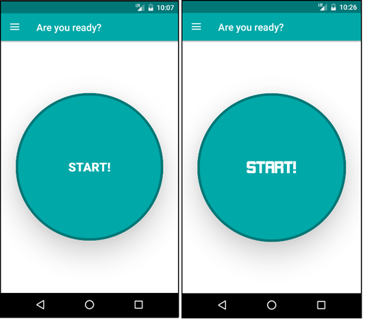
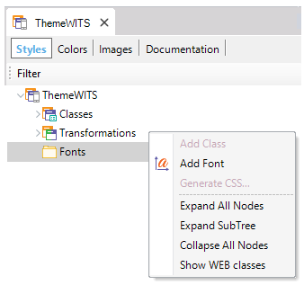
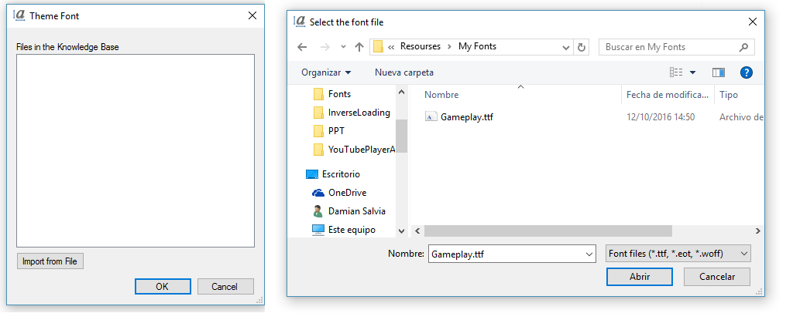
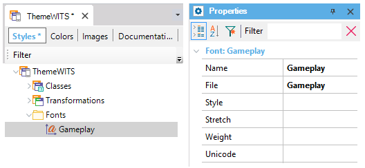
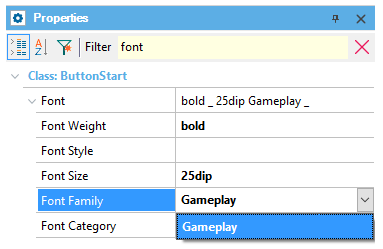

Many times in different scenarios of Smart Devices applications we need to use custom Fonts. This article explains how to use custom fonts in Smart Devices Applications using facilities through the Theme for Smart Devices object. Font nodeOn the Theme for Smart Devices object there is a node called Fonts where the developer can incorporate custom text fonts associated with the application, whose behavior is the same as Web Fonts. This works analogously as Transformations for Smart Devices, giving the ability to:
Usage exampleImagine a simple panel with a "start!" button. The purpose is to customize its appearance by changing its font.  In order to achieve this aim, the following steps must be followed: 1) Get the font that you want and ensure that the extension is compatible with the platform. 2) Open the Theme object and look for the Font node. Right-click it and chose Add Font option.  3) This action will display a dialog in which we must import the source file of the font (in this case, a *.ttf file called Gameplay).  4) Once the font is imported, simply select it from the dialog and click the "ok" button. After this action, the new font will be displayed under the Font node.  5) Look for the theme class control whose font you want to change (in this case, a button class) and look for Font Family. In this property, select from the combo-box the font that you need.  6) That's all. Simply run your application and the text in the control will be displayed with the new font. Notes
ScopeObjects: Theme for Smart Devices object AvailabilityThis functionality is available as from GeneXus 15 Upgrade 1.
|
| Backlinks | |
| Attribute theme-class for Smart Devices | Button theme-class for Smart Devices |
| HowTo:Using web fonts in Genexus | Category:Theme for Smart Devices object |